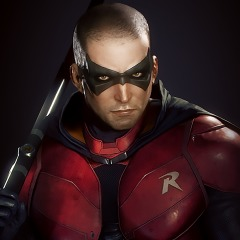

Robin
⠀Nome real: Tim Drake
⠀⠀Altura: 1.78
⠀⠀Peso: 77
⠀⠀Olhos: Azuis
⠀Cabelo: Preto
⠀⠀Parceiros: Batman
História
O jovem Tim Drake estava na apresentação dos Graysons Voadores na noite em que foram mortos. Aonde ele viu o Batman agir pela primeira vez. Ele ficou inspirado pelo heroismo do Batman e seguiu de perto as chronicas de Batman e Robin até ter a oportunidade de se tornar um Robin após deduzir quem eles eram utilizando (assim como ele mesmo diz) suas habilidades autodidata de detetive.